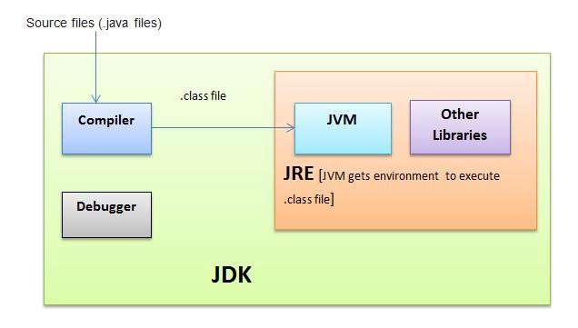

What is Programming language?
It is a language which is used to instruct computer to perform some particular task is known as programming language.
There are two types of language:
- High level language:
It is a language which is easy, readable, instructable, understandable by human is known as high level language.
E.g. Java, Python etc.
- Low level language:
It is a language which is easily understandable by processor is known as low level language or Machine level language.
E.g. Binary format (zeroes and ones)
Block diagram of JDK:
What is JDK?
Java Development Kit (JDK) is a package which consist of Java Compiler and JRE.
Steps to convert high to low level language:
Java source file ---> Java Compiler ---> Class file ---> [JVM (Interpreter) ] ---> Processor ---> Output
Compiler:
Compiler is a tool which is used to convert high level language to Intermediate file like Class file or executable file or byte code.
JRE:
JRE stands for Java Runtime Environment. It is environment which consist of JVM and built in class which is required for the execution java program.
JVM:
JVM stands for Java Virtual Machine. It helps to convert byte code into low level language with the help of Interpreter.
Platform Dependent:
The application created by using one platform run on same platform is known as Platform Dependent.Platform Inependent:
The application created by using one platform run on any platform is known as Platform Inependent.Structure of Java program:
class class_name{
public static void main(String[]args){
//method block
}
//class block
}
Inside the class we can write three things:
class Program_1{
System.out.println("Hello");
} //Compile Time Error
class Program_1{
public static void main(String[]args){
System.out.println("Hello");
}
} //Compile Time Success
Now run this program in system follow below steps:
CMDjavac filename.java (for compilation)java class_name (for run class file)print:
It is a statement having only one work.
- Just print the data
println:
It is a statement having two work.
- Print the data
- Cursor will move to next line.
Token:
It is a smallest unit of programming which is used to compose/write some instructions.
types of Token:
Keywords:
It is a predefined words which compiler can understand and used for specific task.
- It should be write in lowercase.
- In java we have 50+ keywords.
Identifiers:
The name given to the component is called as Identifier.
It has four rules:
1. Can we make my class as only $ ?
- It can't starts with a number.
- We can't use the white space between Identifier.
- We can't use keywords as an Identifier.
- we can't use any special symbol as an Identifier, excepting $ and _(Underscore).
ANS. Yes. It is possible.
2. Can we make my class as only _ (Underscore) ?
ANS. No. It is not possible. We can use _ between Identifier like My_class. But we can't use only _ as an Identifier.
Literals/Data/Values:
Data is nothing but information about object.
There are two types of data:
class Program_2{
public static void main(String[]args){
System.out.println(1+2); //3
System.out.println(2+"Hello"); //2Hello
System.out.println("Hi"+"Hello"); //HiHello
System.out.println(3+true); //Compile Time Error
System.out.println("Hello"+false); //Hellofalse
System.out.println("2"+5); //25
System.out.println('a'+"hello"); //ahello
}
}
class Program_2{
public static void main(String[]args){
System.out.println('a'+'a'); //194
System.out.println('A'+'A'); //130
System.out.println(1+'a'); //98
System.out.println(2+'A'); //67
System.out.println('a'+'A'); //162
System.out.println(1+2.1); //3.1
}
}
Some ASCII value ranges:
'a' --> 97, 'b' --> 98, . . . , 'z'--> 122
'A' --> 65, 'B' --> 66, . . . , 'Z'--> 90
'0' --> 48, '1' --> 49, . . . , '9'--> 57
Variable:
- It is a container which is used to store the data.
- What kind of data and how much data we are going to store it depends on data type.
Syntax:
Data type + Identifier = Data; //Variable
Data type:
- Data type is used to create specific type of variable.
- In java we have two types of data types:
- Primitive
- Non-Primitive
Primitive data type:
It is the data type which is used to create a Primitive variable to store the Primitive type data.
Non-Primitive data type:
It is the data type which is used to create a Non-Primitive variable to store the Non-Primitive type data.